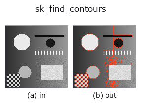

contour op• Data kinds: image → contour
• Call: fullseye.apply(img, "sk_find_contours", a=0.5, b=0.5) (2-D model = एक image + दो scalar knobs a,b∈[0,1])

*Figure synthetic 128×128 input पर सच में चलाकर मिला output है। बाईं ओर input, दाईं ओर output। Point clouds ऊपर से देखे गए scatter के रूप में (brightness = z), 1-D series line के रूप में, volumes z दिशा में maximum-intensity projection के रूप में, videos बीच के frame के रूप में, complex images amplitude के रूप में, और जो return values चित्र नहीं बन सकते वे स्वयं values के रूप में दिखाए जाते हैं।*
Knob a को बदलकर (0.1 / 0.5 / 0.9, दूसरा knob default पर):
▸ sk_find_contours: knob a को बदलने का figure (docs site)
*Knob b output नहीं बदलता (मापा गया: 0.1 / 0.5 / 0.9 पर एक जैसा)।*
दूसरी images पर भी (synthetic scene / photo / coins। ऊपर की row में inputs, नीचे की row में उनके outputs। Knobs default पर):
▸ sk_find_contours: दूसरी images पर output (docs site)
*चौथा column colour (H,W,3) input है। यह op channels को पार किए बिना colour संभालता है (colour channel को तीसरे spatial axis की तरह convolve नहीं करता)।*
Contour line extraction (marching squares)। Grayscale image पर दिए गए level मान को काटने वाली curves का पीछा करता है और उन्हें sub-pixel सटीकता वाले contour coordinate sequences के समूह के रूप में लौटाता है —— binary image की केवल बाहरी सीमा ही नहीं, बल्कि continuous मानों की contour lines भी संभाल सकना इसे binary contour extraction से अलग बनाता है।
HALCON में इसका कोई सीधा समकक्ष नहीं है (खाली छोड़ा गया)। implementation measure.find_contours(v, level=0.2+0.5*a) है, जिसमें 3 से कम vertex वाले टुकड़े फेंक दिए जाते हैं — a contour level (threshold) को 0.2-0.7 पर बदलता है। b उपयोग नहीं होता। return value एक dictionary है जिसमें image का shape और contour coordinate array की list होती है (contour type)।
• gallery2d_bridge family guide
• Sample data catalog (DL URL / license) — 2-D के लिए skimage.data (BSD/public) + synthetic, 3-D के लिए real data sources (Stanford/PDS आदि) के DL URL।
• Operators का स्रोत और संदर्भ — इस op family के मूल research/methods के स्रोत।
• Algorithm का मानक स्रोत (लेखक, वर्ष) और उपयोग ऊपर की family usage guide में दिए गए हैं।
नीचे का program सच में चलता है, यह जाँचा गया है (figure वाला ही input)। Studio की help में यह block buttons बन जाता है, जिनसे इसे वहीं load करके चलाया जा सकता है।
sk_find_contours 0.50 0.50
▸ यह pipeline load करें · Load करके चलाएँ
• gallery2d_bridge — py -3.11 examples/gallery2d_bridge.py
• gallery2d_contour_measure — py -3.11 examples/gallery2d_contour_measure.py
contour को input के रूप में लेते हैं)identity · select_contours · smooth_contours · fit_line_contours · contours_to_region · count_contours · total_length · select_contours_xld
contour)select_contours · smooth_contours · fit_line_contours · contours_to_region · edges_sub_pix · lines_gauss · select_contours_xld · smooth_contours_xld
*Provenance: ops.py — 2D operator registry. यह per-op note tools/opdocs.py md से अपने-आप generate होता है (हाथ से edit न करें)।*
© 2026 Kazufumi Furuse — Fullseye operator documentation. Licensed under Apache-2.0.